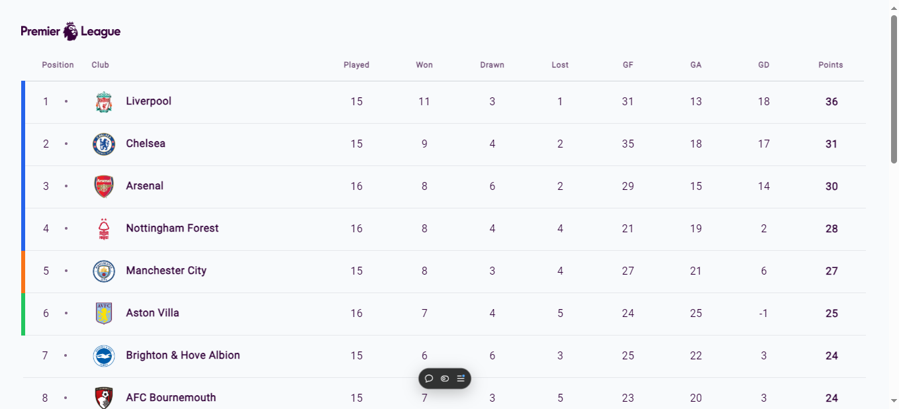

#เกี่ยวกับฉัน
#ประวัติการศึกษา
เรียนจบการศึกษาจาก โรงเรียนเมืองพัทยา 5
อ.1 - อ.3
เรียนจบการศึกษาจาก โรงเรียนเมืองพัทยา 9 วัดโพธิสัมพันธ์
ป.1 - ม.3
สายการเรียน วิทย์คณิต
เรียนจบการศึกษาจาก โรงเรียนโพธิสัมพันธ์พิทยาคาร
ม.4 - ม.6
สายการเรียน วิทย์คอม
กำลังศึกษาอยู่ที่ มหาวิทยาลัยเกษตรศาสตร์ วิทยาเขตศรีาราชา
ระดับปริญาตรี นิสิตชั้นปีที่ 2
คณะ วิทยาศาสตร์ ศรีราชา
สาขา วิทยาการคอมพิวเตอร์
#งานอดิเรก
เวลาว่างชอบเขียนโค้ด, อ่านหนังสือโปรแกรม และ ฝึกฝนพัฒนาเองอยู่ตลอดเวลาโดยเฉพาะเรื่องทักษะการเขียนโปรแกรม ชอบจะเขียนโค้ดและทำโปรเจคเป็นพิเศษและอัปผลงานไว้ใน Github
#ผลงาน
ผลงานเว็บไชต์ที่สร้างขึ้นมาเองคัดมาเฉพาะอันที่น่าสนใจโดยผลงานทั้งหมดอยู่ใน Github
1. เว็บไซต์แสดงตารางคะแนนพรีเมียร์ลีก
ชื่อโปรเจค: react-premier-league-table
คำอธิบาย: เขียนด้วย React TypeScript ใช้ร่วมกับ Tailwind CSS โดยมีการยิง API เพื่อขอข้อมูลนำมาแสดงบนหน้าเว็บ
ลิ้งค์เว็บไซต์: react-premier-league-table.vercel.app2. เว็บไซต์แปลงนิพจน์ Prefix และ Postfix
ชื่อโปรเจค: react-converter
คำอธิบาย: เขียนด้วย React TypeScript ใช้ร่วมกับ Tailwind CSS โดยป้อนนิพจน์ที่ต้องการจะแปลง ให้เลือกว่าจะแปลงเป็น Prefix หรือ Postfix แล้วคลิกที่ปุ่มจะได้ผลลัพธ์ของการแปลงนิพจน์ และ ตารางการแปลงนิพจน์แสดงให้รายละเอียดการทำ
ลิ้งค์เว็บไซต์: react-converter-nine.vercel.app3. เว็บไซต์แสดงการด์สถานที่น่าท่องเที่ยวทั่วโลก
ชื่อโปรเจค: react-card
คำอธิบาย: เขียนด้วย React TypeScript กับ CSS แสดงการด์สถานที่น่าท่องเที่ยวมา 10 อัน และ พร้อมให้ข้อมูลสถานที่นั้นแบบคร่าวๆ
ลิ้งค์เว็บไซต์: react-card-phi.vercel.app4. เว็บไซต์แสดงอุณหภูมิสภาพอากาศ
ชื่อโปรเจค: react-weather-app
คำอธิบาย: เขียนด้วย React TypeScript กับ Tailwind CSS มีการใช้ API ของ OpenWeather API เพื่อนำข้อมูลสภาพอากาศมาแสดงบนหน้าเว็บ โดยการค้นหาชื่อเมืองที่เราต้องการแล้วกดปุ่มค้นหาก็จะแสดงข้อมูลสภาพอากาศต่างๆตามเมืองที่เราค้นหา
ลิ้งค์เว็บไซต์: gentle-raindrop-55eae7.netlify.app5. เว็บไซต์เครื่องคิดเลข
ชื่อโปรเจค: react-calculator
คำอธิบาย: เขียนด้วย React TypeScript กับ Tailwind CSS คำนวณได้เหมือนเครื่องคิดเลขทั่วๆไป เว็บไซต์รองรับการแสดงผลแบบ responsive
ลิ้งค์เว็บไซต์: calculator-sage-one.vercel.app6. เว็บไซต์แสดง sidebar
ชื่อโปรเจค: react-sidebar2
คำอธิบาย: เขียนด้วย React TypeScript กับ Tailwind CSS แสดงแถบ sidebar โดยการ clone (ไม่ได้ copy code เป็นเพียงการมองจาก UI ที่เห็นแล้วเขียนโค้ดเป็นของตัวเองทั้งหมด) มาจากคลิปๆนึงที่ดู
ลิ้งค์เว็บไซต์: react-sidebar2.vercel.app